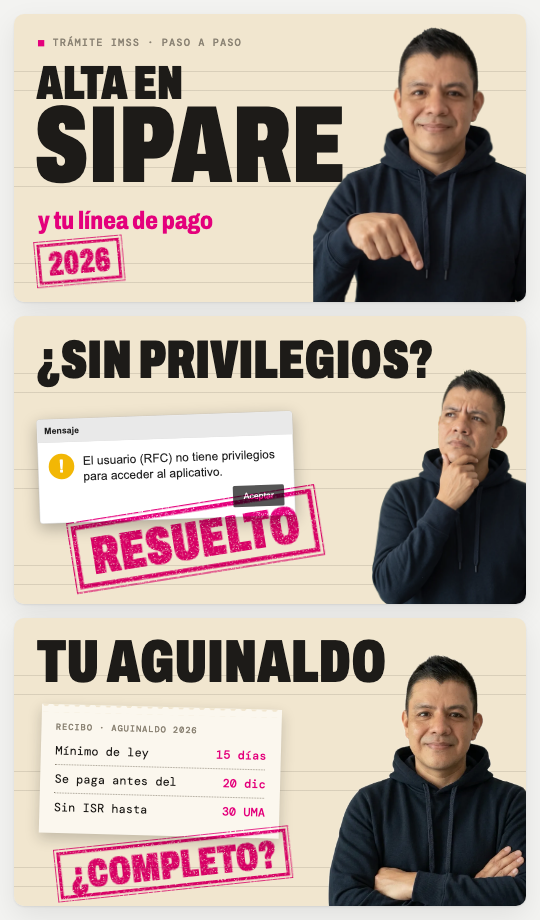
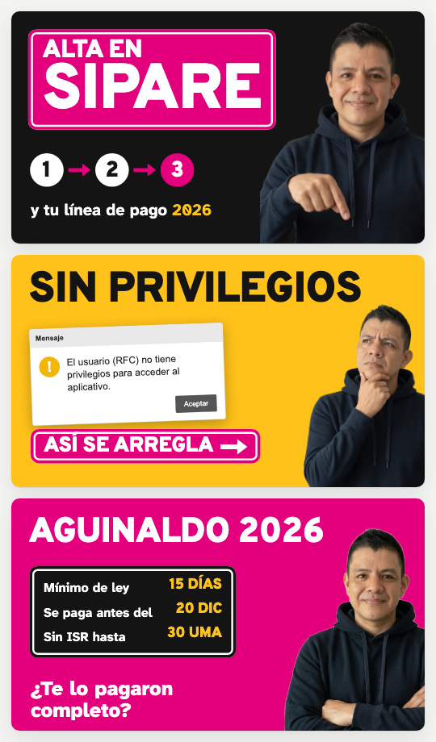
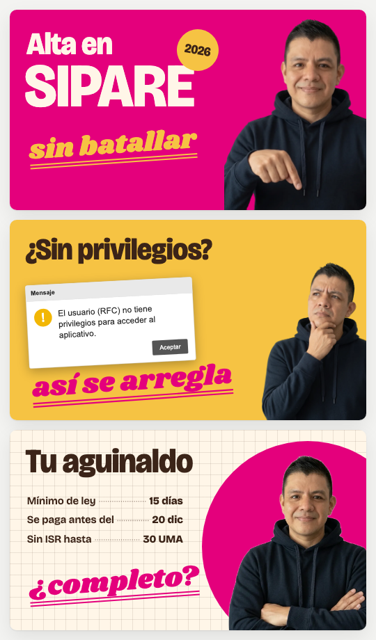

Tres direcciones, las tres con rosa mexicano
Elegida: C con la disciplina de B. Ver la identidad v1 →
Para un público de 25 a 44 años que llega por primera vez, buscando un trámite o un error del SAT o del IMSS, y que el canal quiere llevar hacia sus finanzas personales. Se prueban donde vive el canal: miniatura a 168 px, Short, banner, ícono y rótulo.
Ninguna comparte tipografía ni color con soycontador.ai, TodoConta ni sicastro.com, y ninguna se parece a lo oficial (guinda, dorado, logos del SAT o del IMSS).

A · Acuse
El trámite ya resuelto: papel, folio y el sello rosa de "resuelto". La que más certeza transmite.

B · Señalética
Letreros de carretera en rosa y negro: pasos, flechas y el error en amarillo. La que más se distingue en el teléfono.

C · Amistades largas
El dicho y la libreta de la tienda: rosa, maíz y una palabra rotulada. La más cálida y la que mejor salta a finanzas personales.
Cómo se comparan
| A · Acuse | B · Señalética | C · Amistades largas | |
|---|---|---|---|
| Se distingue a 168 px | Media: el papel claro se confunde con otros | Alta | Alta |
| Transmite certeza | Alta | Alta | Media |
| Calidez | Baja | Media | Alta |
| Aguanta finanzas personales | Media: el talón sí, el resto huele a trámite | Media: la carretera es de trámites | Alta |
| Aguanta un sitio web después | Alta | Media | Alta |
| Esfuerzo por miniatura | Medio (sello y talón) | Bajo (placa y pasos, muy plantillable) | Medio (la palabra rotulada se escoge cada vez) |